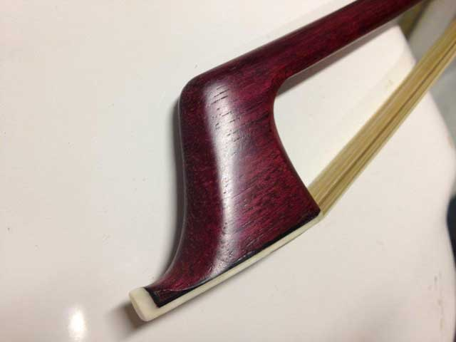
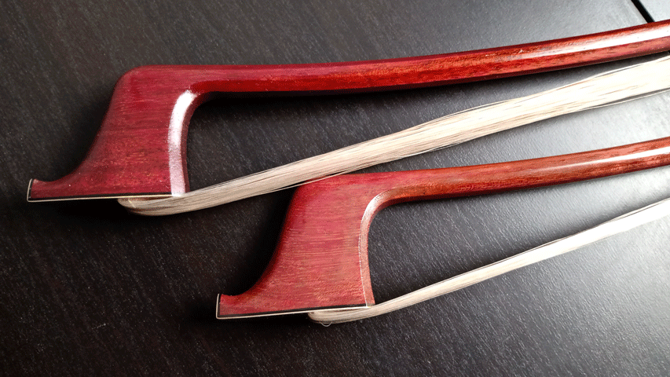
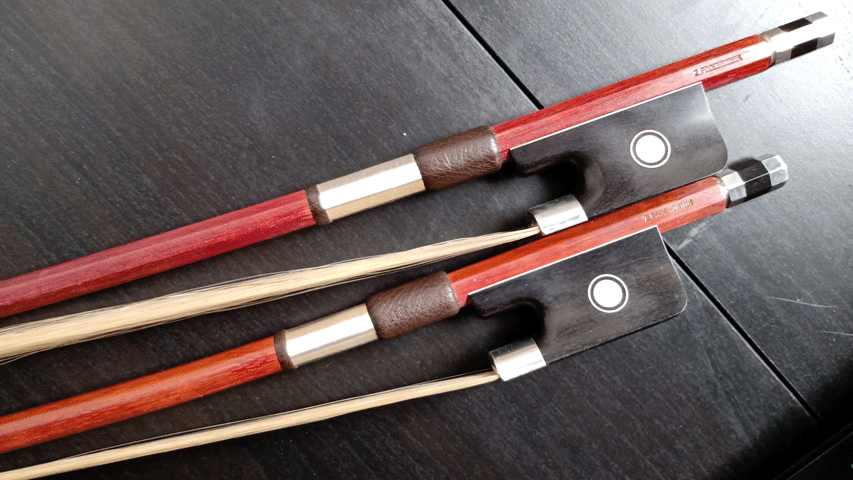
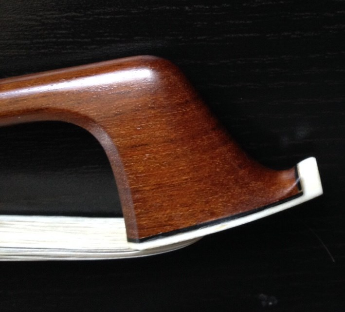
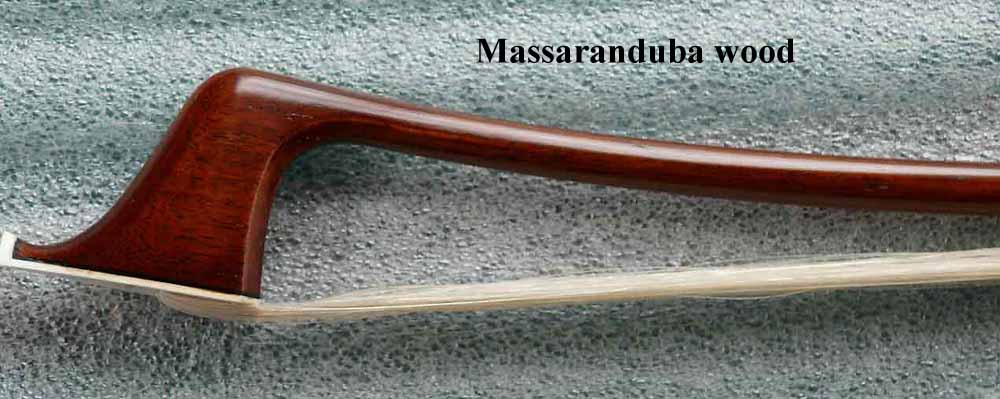

Bass Bows made from Massaranduba Ipe and Purpleheart are equals to bows made from Pernambuco wood. All 3 grow in South America and have very similar characteristics. Massaranduba is slightly heavier and Purpleheart slightly lighter in weight than Pernambuco wood .
Both type are easily commercially available but only small percentage is good enough for bow making.
Massaranduba (Manilkara bidentata) - also known as Brazilian Redwood, Acana, Aus, Ausabo, Balata, Balata franc, Balata gomme, Balata rouge, Beefwood, Bolletri, Bolletrie, Bulletwood, Chicozapota, Macaranduba, Maparajuba, Massarandu, Nispero, Pamashto, Paraju, Quinilla colorada, Red balata.
Source Countries: Brazil, Colombia, Dominican Republic, French Guiana, Guyana, Mexico, Panama, Peru, Venezuela.
My Purpleheart wood double bass bow French style and German style



Purpleheart ( Peltogyne spp) comes from Parts of Central and South America Other Names: Nazareno (Panama) Amarante (French Guyana, France) Bois Violet (French Guyana) Purple Heart (Guyana) Purper Hart (Surinam) Blue Wood (Colombia, Britain) Tananeo (Colombia) Violet Holz (Colombia, Germany) Amaranth (Colombia, USA)
|
Purpleheart |
Green |
Dry |
English |
Green |
Dry |
Metric |
|
Bending Strength |
16027 |
21610 |
psi |
1127 |
1519 |
kg/cm2 |
|
Max.Crushing Strength |
21610 |
7920 |
psi |
1519 |
557 |
kg/cm2 |
|
Stiffness |
2227 |
2369 |
1000psi |
157 |
167 |
1000 kg/cm2 |

My German style double bass bow made from Ipe wood.
Common Name(s): Ipe, Brazilian Walnut, Lapacho
Scientific Name: Handroanthus spp. (formerly placed in the Tabebuia genus)
Distribution: Tropical Americas (Central and South America); also farmed commercially
Tree Size: 100-130 ft (30-40 m) tall, 2-4 ft (.6-1.2 m) trunk diameter
Average Dried Weight: 69 lbs/ft3 (1,100 kg/m3)
Specific Gravity (Basic, 12% MC): .91, 1.10
Janka Hardness: 3,510 lbf (15,620 N)
Modulus of Rupture: 25,660 lbf/in2 (177.0 MPa)
Elastic Modulus: 3,200,000 lbf/in2 (22.07 GPa)
Crushing Strength: 13,600 lbf/in2 (93.8 MPa)
Shrinkage: Radial: 5.9%, Tangential: 7.2%, Volumetric: 12.4%, T/R Ratio: 1.2
Massaranduba (Manilkara bidentata) - also known as Brazilian Redwood, Acana, Aus, Ausabo, Balata, Balata franc, Balata gomme, Balata rouge, Beefwood, Bolletri, Bolletrie, Bulletwood, Chicozapota, Macaranduba, Maparajuba, Massarandu, Nispero, Pamashto, Paraju, Quinilla colorada, Red balata.
Source Countries: Brazil, Colombia, Dominican Republic, French Guiana, Guyana, Mexico, Panama, Peru, Venezuela.
MASSARANDUBA
One of my South American friends has shown me a very good double bass bow made from Purpleheart wood and also mentioned about good bows being made from other Brazilian and South American woods. After doing some research, analyzed lab test results of bending strength, stiffness, density, crashing strength, weight and availability, I have decided to experiment and make a few bows. Of course, the selection of wood with tight nice grains is very important. The first few Massaranduba bows were sold quickly and were preferred over the traditional Pernambuco bows. The French model bows are slightly heavier (135 -150 grams). For these bows, I have chosen a model similar to Sartory and Vigneron .While working with this wood I have found better consistency throughout the whole stick, better vibration quality, and more predictable results. This wood grows in many South American countries and is being used in bridge construction, support beams and decks. Massaranduba is available at exotic lumber suppliers in the US, Canada, and Europe.

| COMMON NAME | SCIENTIFIC NAME | ORIGIN | (1000PSI) STIFFNESS | (LBS) HARDNESS | SHEARING STRENGTH | SPECIFIC GRAVITY | (#/CU.FT.) WEIGHT | (#/CU.FT.) DENSITY | STATIC BEND (FSPL) |
| Massaranduba | Manilkara bidentata | Brazil | 3450 | 3190 | 2500 | 1 | 67 | 66 | 15030 |